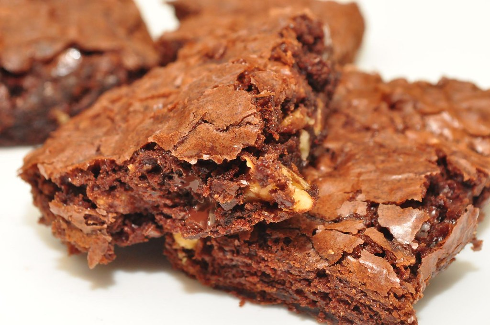

Brownie Recipe
Home
www.loveandlemons.com

“brownies...yawn...boooring” by jeffreyw, CC BY 2.0
Description
A chocolate baked dessert bar.
Ingredients
- Eggs
- Water
- Powdered Sugar
- Unsweetened Cocoa Powder
- Oil or Melted Butter
- Vanilla Extract
Steps
Taken from
threebigbites.com
Mix
- Combine the sugar, flour, powdered sugar,
cocoa powder, chocolate chips, and salt
in a medium bowl.
- Then, whisk together the eggs, oil,
water, and vanilla in a separate large
bowl.
- Sprinkle dry mix over wet mix and fold
until combined.
Pour Into Pan
Use an 8x8-inch or 9x9-inch baking pan lined with
parchment paper, and use a rubber spatula to spread
it across the pan and smooth the top.
Bake!
- Transfer pan to 325°F oven and bake for 40 to
55 minutes.
- Take out when edges are set and a toothpick
inserted comes out clean.
- Allow to cool in the pan.
Serve!